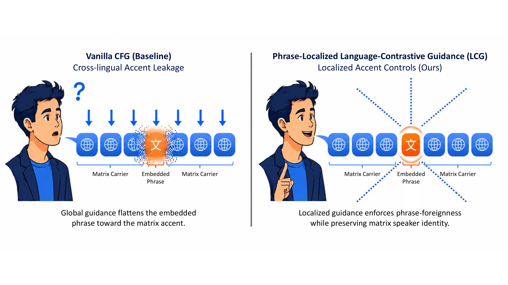
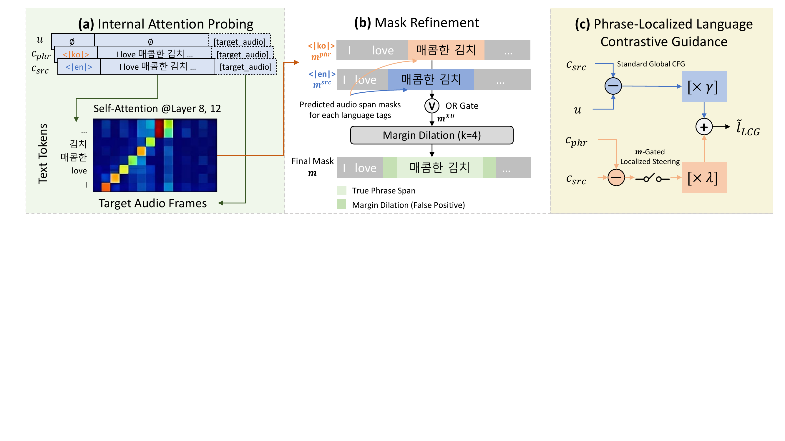

Audio demo accompanying our anonymous submission
⚠ Demo for an anonymous submission under review.
Author identities, affiliations, and code repository links have been omitted for double-blind review.
Zero-shot multilingual text-to-speech (TTS) foundation models replicate speaker identity across languages but suffer from severe cross-lingual accent leakage when the reference voice's native language differs from the target text — a problem that is acute in intra-utterance code-switching (CS), where a foreign phrase must be pronounced with a native accent while the surrounding host carrier preserves speaker identity. We propose Phrase-Localized Language-Contrastive Guidance (LCG), a training-free, inference-time framework for discrete diffusion language model (DLM)-based TTS. LCG (i) extracts phrase boundaries dynamically from the model's internal self-attention layers (no external aligner), (ii) refines them with a zero-cost mask expansion that the iterative denoising naturally tolerates, and (iii) applies a contrastive direction formed by swapping language tags over the refined boundaries — yielding a phrase-localized, language-specific steering vector with an independent scale (λ) decoupled from the global text guidance scale (γ). On a balanced 1,200-utterance benchmark covering 12 directional configurations across 5 languages, LCG is preferred over the unguided baseline in 75.5% of paired listener judgments (p < 0.001) while keeping global naturalness and speaker identity intact.
Standard global guidance flattens the foreign embedded phrase into the matrix language's accent. Our framework applies localized guidance only over self-derived phrase boundaries to enforce native pronunciation while preserving the host carrier.

Three stages: (a) Internal Attention Probing extracts raw audio-to-text alignment from mid-decoder layers; (b) Mask Refinement resolves tag-induced shifts via dual-tag union and symmetric margin dilation; (c) Phrase-Localized LCG synthesizes the final steering logits with independent guidance scales λ and γ.

Same English phrase rendered by three systems on the same matrix carrier sentence.
All examples are drawn from our LA=1 subset — phrases where
every system succeeded at producing intelligible English — isolating the
residual accent quality as the perceptual signal.
Use headphones; differences are subtle but consistent. Highlighted text marks the embedded foreign phrase.
Example 1 — "Automate audit trail with immutable event logs"
| Vanilla (no CS) | baseline, no localized guidance | |
| Swap (λ=3, coupled) | position-wise language tag swap | |
| Ours — LCG (λ=7) | phrase-localized contrastive guidance |
Example 2 — "organic word-of-mouth growth after release weekend"
| Vanilla (no CS) | baseline | |
| Swap (λ=3, coupled) | tag-swap baseline | |
| Ours — LCG (λ=7) | phrase-localized LCG |
Example 3 — "disciplined capital allocation across public and private"
| Vanilla (no CS) | baseline | |
| Swap (λ=3, coupled) | tag-swap baseline | |
| Ours — LCG (λ=7) | phrase-localized LCG |
Example 4 — "a standard double-blind peer review process"
| Vanilla (no CS) | baseline | |
| Swap (λ=3, coupled) | tag-swap baseline | |
| Ours — LCG (λ=7) | phrase-localized LCG |
LCG affects only the embedded phrase frames. The surrounding matrix carrier retains the reference speaker's identity and prosody.
Full code-switched sentence (J→E)
| Vanilla (no CS) | baseline | |
| Swap (λ=3) | tag-swap | |
| Ours — LCG | phrase-localized LCG |
One sentence rendered across four guidance settings, from no localized control to over-amplified LCG. The default operating point maximizes accent clarity without acoustic degradation.
Sentence (J→E)
| Vanilla (no CS) | no localized guidance | |
| Swap (λ=3, coupled) | tag-swap; mild accent shift | |
| Ours — LCG (λ=4, default) | phrase-localized, decoupled scale | |
| Ours — LCG (λ=10, over-amplified) | excessive guidance; naturalness drops |
All audio above is synthesized from our 1,200-utterance balanced code-switching benchmark, generated with a large language model and spanning five languages across twelve directional configurations.
Each utterance contains 3–5 dense, technical or literary embedded phrases (~6 words, ~30 characters per phrase). The corpus is balanced by direction (100 utterances per direction) to enable per-direction evaluation.